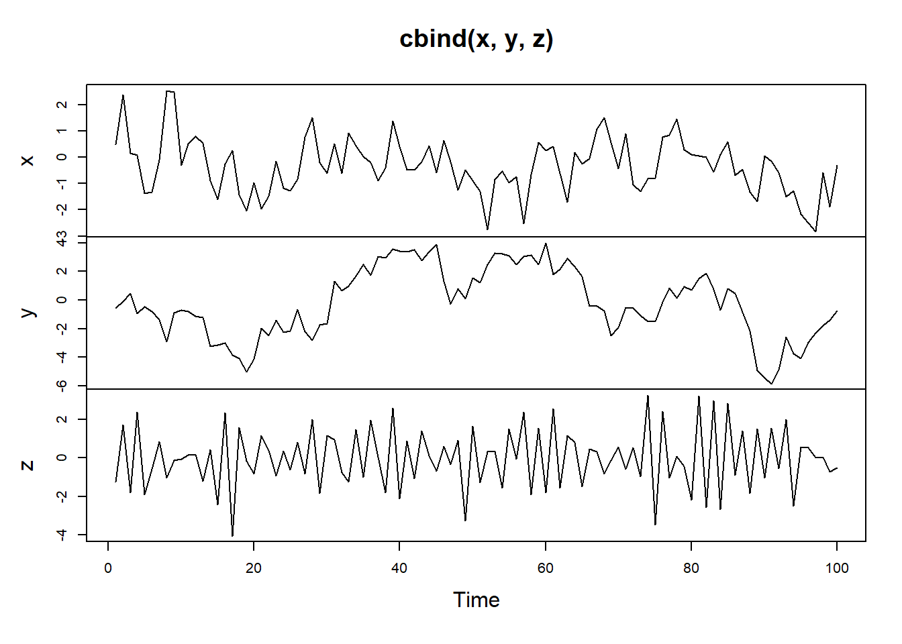
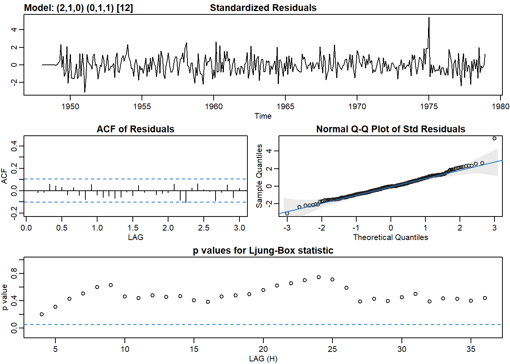

6 Chapter 3 Lab
6.1 Autoregressive model (AR)
AR(p) process is correlation with lagged values of the data itself.
\[ X_t-\mu = \alpha \cdot (X_{t-1}-\mu)+Noise_t\]
Some simulation examples down below. Note how the coefficent \(\phi\) affects the look of the graph:
x <- arima.sim(model = list(ar = 0.5), n = 100)
# Simulate an AR model with 0.9 slope
y <- arima.sim(model = list(ar = 0.9), n = 100)
# Simulate an AR model with -0.75 slope
z <- arima.sim(model = list(ar = -0.75), n = 100)
plot.ts(cbind(x, y, z)) AR(1) model with slope \(\alpha=0.9\) creates a obvious trend while the negative slope creates a zic-zac pattern.
par(mfrow = c(3,1))
# Plot your simulated data
acf(x)
acf(y)
acf(z)The ACF plots tell a lot about each time plot:
Strong short-term positive correlation in early lags (1 and 2)
Strong short-term positive correlation in early lags up to lag of 5
Strong short-term negative correlation in early lags up to lag of 5
The PACF will tell us what AR(p) model would be appropriate for fitting this data
par(mfrow = c(3,1))
# Plot your simulated data
pacf(x)
pacf(y)
pacf(z)The PACF plots tell us that a AR(1) model would be appropriate for all 3 data. This is expected since we used AR(1) models to generate these data.
6.2 Chicken Price
6.3 Chicken price
library(astsa)
# Plot differenced chicken
plot(diff(chicken)) # Plot P/ACF pair of differenced data to lag 60
acf2(diff(chicken), max.lag = 60)## [,1] [,2] [,3] [,4] [,5] [,6] [,7] [,8] [,9] [,10] [,11] [,12]
## ACF 0.72 0.39 0.09 -0.07 -0.16 -0.20 -0.27 -0.23 -0.11 0.09 0.26 0.33
## PACF 0.72 -0.29 -0.14 0.03 -0.10 -0.06 -0.19 0.12 0.10 0.16 0.09 0.00
## [,13] [,14] [,15] [,16] [,17] [,18] [,19] [,20] [,21] [,22] [,23] [,24]
## ACF 0.20 0.07 -0.03 -0.10 -0.19 -0.25 -0.29 -0.20 -0.08 0.08 0.16 0.18
## PACF -0.22 0.03 0.03 -0.11 -0.09 0.01 -0.03 0.07 -0.04 0.06 -0.05 0.02
## [,25] [,26] [,27] [,28] [,29] [,30] [,31] [,32] [,33] [,34] [,35] [,36]
## ACF 0.08 -0.06 -0.21 -0.31 -0.40 -0.40 -0.33 -0.18 0.02 0.20 0.30 0.35
## PACF -0.14 -0.19 -0.13 -0.06 -0.08 -0.05 0.01 0.03 0.10 0.02 -0.01 0.09
## [,37] [,38] [,39] [,40] [,41] [,42] [,43] [,44] [,45] [,46] [,47] [,48]
## ACF 0.26 0.13 -0.02 -0.14 -0.23 -0.21 -0.18 -0.11 -0.03 0.08 0.21 0.33
## PACF -0.12 0.01 -0.01 -0.05 0.02 0.12 -0.05 -0.13 -0.07 0.01 0.14 0.05
## [,49] [,50] [,51] [,52] [,53] [,54] [,55] [,56] [,57] [,58] [,59] [,60]
## ACF 0.26 0.12 -0.01 -0.11 -0.13 -0.09 -0.09 -0.06 0.03 0.17 0.29 0.32
## PACF -0.20 -0.01 0.07 -0.04 0.02 0.00 -0.08 0.03 0.04 0.00 0.01 0.03# Fit ARIMA(2,1,0) to chicken - not so good
sarima(chicken, p = 2, d = 1, q = 0)## initial value 0.001863
## iter 2 value -0.156034
## iter 3 value -0.359181
## iter 4 value -0.424164
## iter 5 value -0.430212
## iter 6 value -0.432744
## iter 7 value -0.432747
## iter 8 value -0.432749
## iter 9 value -0.432749
## iter 10 value -0.432751
## iter 11 value -0.432752
## iter 12 value -0.432752
## iter 13 value -0.432752
## iter 13 value -0.432752
## iter 13 value -0.432752
## final value -0.432752
## converged
## initial value -0.420883
## iter 2 value -0.420934
## iter 3 value -0.420936
## iter 4 value -0.420937
## iter 5 value -0.420937
## iter 6 value -0.420937
## iter 6 value -0.420937
## iter 6 value -0.420937
## final value -0.420937
## converged## $fit
##
## Call:
## stats::arima(x = xdata, order = c(p, d, q), seasonal = list(order = c(P, D,
## Q), period = S), xreg = constant, transform.pars = trans, fixed = fixed,
## optim.control = list(trace = trc, REPORT = 1, reltol = tol))
##
## Coefficients:
## ar1 ar2 constant
## 0.9494 -0.3069 0.2632
## s.e. 0.0717 0.0718 0.1362
##
## sigma^2 estimated as 0.4286: log likelihood = -178.64, aic = 365.28
##
## $degrees_of_freedom
## [1] 176
##
## $ttable
## Estimate SE t.value p.value
## ar1 0.9494 0.0717 13.2339 0.0000
## ar2 -0.3069 0.0718 -4.2723 0.0000
## constant 0.2632 0.1362 1.9328 0.0549
##
## $AIC
## [1] 2.040695
##
## $AICc
## [1] 2.041461
##
## $BIC
## [1] 2.111922# Fit SARIMA(2,1,0,1,0,0,12) to chicken - that works
sarima(chicken, p = 2, d = 1, q = 0, P = 1, D = 0, Q = 0, S = 12)## initial value 0.015039
## iter 2 value -0.226398
## iter 3 value -0.412955
## iter 4 value -0.460882
## iter 5 value -0.470787
## iter 6 value -0.471082
## iter 7 value -0.471088
## iter 8 value -0.471090
## iter 9 value -0.471092
## iter 10 value -0.471095
## iter 11 value -0.471095
## iter 12 value -0.471096
## iter 13 value -0.471096
## iter 14 value -0.471096
## iter 15 value -0.471097
## iter 16 value -0.471097
## iter 16 value -0.471097
## iter 16 value -0.471097
## final value -0.471097
## converged
## initial value -0.473585
## iter 2 value -0.473664
## iter 3 value -0.473721
## iter 4 value -0.473823
## iter 5 value -0.473871
## iter 6 value -0.473885
## iter 7 value -0.473886
## iter 8 value -0.473886
## iter 8 value -0.473886
## iter 8 value -0.473886
## final value -0.473886
## converged## $fit
##
## Call:
## stats::arima(x = xdata, order = c(p, d, q), seasonal = list(order = c(P, D,
## Q), period = S), xreg = constant, transform.pars = trans, fixed = fixed,
## optim.control = list(trace = trc, REPORT = 1, reltol = tol))
##
## Coefficients:
## ar1 ar2 sar1 constant
## 0.9154 -0.2494 0.3237 0.2353
## s.e. 0.0733 0.0739 0.0715 0.1973
##
## sigma^2 estimated as 0.3828: log likelihood = -169.16, aic = 348.33
##
## $degrees_of_freedom
## [1] 175
##
## $ttable
## Estimate SE t.value p.value
## ar1 0.9154 0.0733 12.4955 0.0000
## ar2 -0.2494 0.0739 -3.3728 0.0009
## sar1 0.3237 0.0715 4.5238 0.0000
## constant 0.2353 0.1973 1.1923 0.2347
##
## $AIC
## [1] 1.945971
##
## $AICc
## [1] 1.947256
##
## $BIC
## [1] 2.0350056.4 Unemployment
plot(unemp)d_unemp <- diff(unemp)
plot(d_unemp)# Plot seasonal differenced diff_unemp
dd_unemp <- diff(d_unemp, lag = 12)
plot(dd_unemp)# Plot P/ACF pair of the fully differenced data to lag 60
dd_unemp <- diff(diff(unemp), lag = 12)
acf2(dd_unemp, max.lag = 60)## [,1] [,2] [,3] [,4] [,5] [,6] [,7] [,8] [,9] [,10] [,11] [,12] [,13]
## ACF 0.21 0.33 0.15 0.17 0.10 0.06 -0.06 -0.02 -0.09 -0.17 -0.08 -0.48 -0.18
## PACF 0.21 0.29 0.05 0.05 0.01 -0.02 -0.12 -0.03 -0.05 -0.15 0.02 -0.43 -0.02
## [,14] [,15] [,16] [,17] [,18] [,19] [,20] [,21] [,22] [,23] [,24] [,25]
## ACF -0.16 -0.11 -0.15 -0.09 -0.09 0.03 -0.01 0.02 -0.02 0.01 -0.02 0.09
## PACF 0.15 0.03 -0.04 -0.01 0.00 0.01 0.01 -0.01 -0.16 0.01 -0.27 0.05
## [,26] [,27] [,28] [,29] [,30] [,31] [,32] [,33] [,34] [,35] [,36] [,37]
## ACF -0.05 -0.01 0.03 0.08 0.01 0.03 -0.05 0.01 0.02 -0.06 -0.02 -0.12
## PACF -0.01 -0.05 0.05 0.09 -0.04 0.02 -0.07 -0.01 -0.08 -0.08 -0.23 -0.08
## [,38] [,39] [,40] [,41] [,42] [,43] [,44] [,45] [,46] [,47] [,48] [,49]
## ACF 0.01 -0.03 -0.03 -0.10 -0.02 -0.13 0.00 -0.06 0.01 0.02 0.11 0.13
## PACF 0.06 -0.07 -0.01 0.03 -0.03 -0.11 -0.04 0.01 0.00 -0.03 -0.04 0.02
## [,50] [,51] [,52] [,53] [,54] [,55] [,56] [,57] [,58] [,59] [,60]
## ACF 0.10 0.07 0.10 0.12 0.06 0.14 0.05 0.04 0.04 0.07 -0.03
## PACF 0.03 -0.05 0.02 0.02 -0.08 0.00 -0.03 -0.07 0.05 0.04 -0.04# Fit an appropriate model
sarima(unemp, p = 2, d = 1, q = 0, P = 0, D = 1, Q = 1, S = 12)## initial value 3.340809
## iter 2 value 3.105512
## iter 3 value 3.086631
## iter 4 value 3.079778
## iter 5 value 3.069447
## iter 6 value 3.067659
## iter 7 value 3.067426
## iter 8 value 3.067418
## iter 8 value 3.067418
## final value 3.067418
## converged
## initial value 3.065481
## iter 2 value 3.065478
## iter 3 value 3.065477
## iter 3 value 3.065477
## iter 3 value 3.065477
## final value 3.065477
## converged
## $fit
##
## Call:
## stats::arima(x = xdata, order = c(p, d, q), seasonal = list(order = c(P, D,
## Q), period = S), include.mean = !no.constant, transform.pars = trans, fixed = fixed,
## optim.control = list(trace = trc, REPORT = 1, reltol = tol))
##
## Coefficients:
## ar1 ar2 sma1
## 0.1351 0.2464 -0.6953
## s.e. 0.0513 0.0515 0.0381
##
## sigma^2 estimated as 449.6: log likelihood = -1609.91, aic = 3227.81
##
## $degrees_of_freedom
## [1] 356
##
## $ttable
## Estimate SE t.value p.value
## ar1 0.1351 0.0513 2.6326 0.0088
## ar2 0.2464 0.0515 4.7795 0.0000
## sma1 -0.6953 0.0381 -18.2362 0.0000
##
## $AIC
## [1] 8.723811
##
## $AICc
## [1] 8.723988
##
## $BIC
## [1] 8.765793